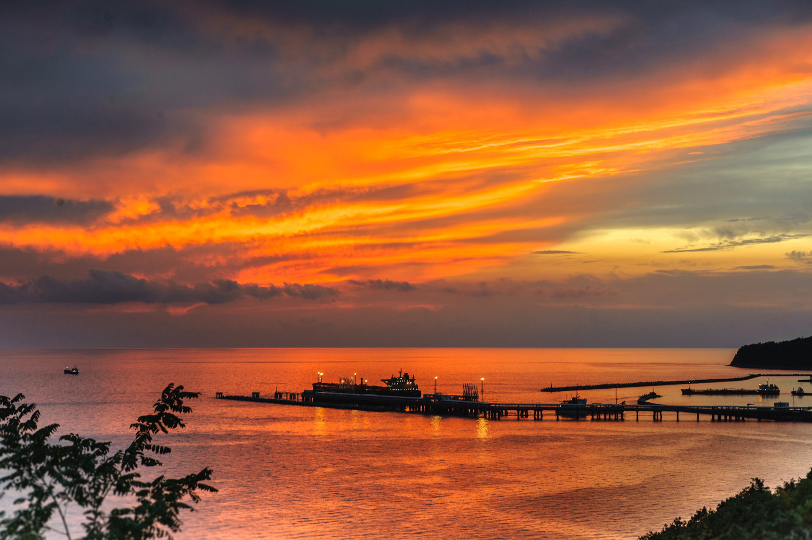
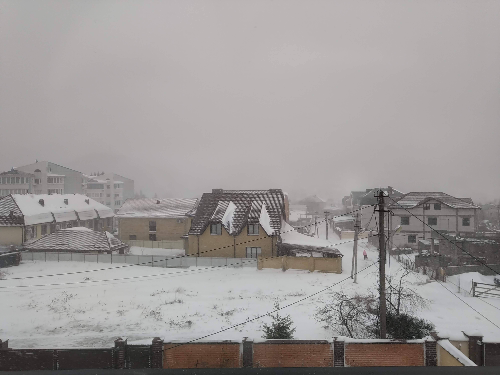
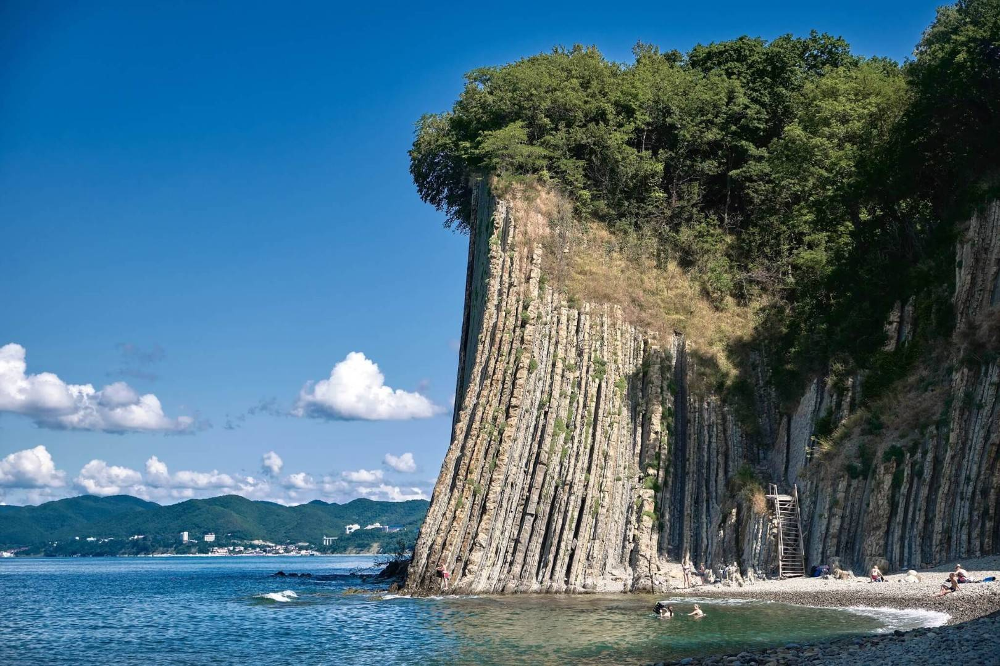

Tuapcicity of our city
Достопримечательности
Ну собственно вы уже увидели все достопримечательности Туапсе сверху.

Ладно, ладно, уговорили
Знакомьтесь, одна из главных достопримечательностей, ради которых приезжают в Туапсе - Артем Frusciante. В настоящее время находится на реставрации и открыта только летом.

Туапсе широко известен своими постоянными снежными бурями зимой и летом. Ежегодно много туристов приезжают смотреть на это.
Скала киселева, названная в честь известного Русского художника. Именно здесь были съемки рыбалки на белой скале в "Бриллиантовой руке".
